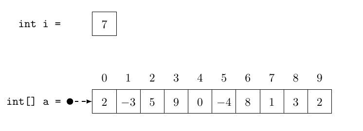
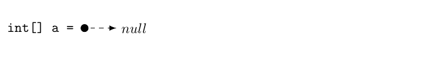
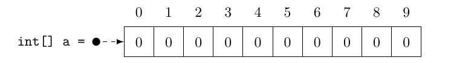
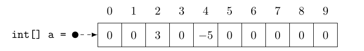

Lektion 2.2 — Teil 2: Datenstrukturen & OOP
Arrays
Lernziele
- erklären, wann ein Array statt einzelner Variablen nötig istAbschnitt 1
- Arrays deklarieren, mit
newerzeugen und über den Index (ab 0) lesen und schreibenAbschnitt 2 - gültige Indizes prüfen und eine
ArrayIndexOutOfBoundsExceptionvermeidenAbschnitt 2 - alle Elemente mit einer Schleife und
lengthdurchlaufenAbschnitt 2 - Minimum, Maximum und Durchschnitt eines Arrays berechnenAbschnitt 3
1 — Viele Werte desselben Typs
Bisher haben wir von einem Datentyp jeweils einen Wert gespeichert: int i; legt
im Speicher Platz für genau einen Integer an, angesprochen über i. Oft braucht man aber
gleich mehrere Werte desselben Typs – etwa Messreihen für Temperatur oder
Luftfeuchtigkeit, oder eine Personalverwaltung, in der eine Firma beliebig viele
Mitarbeiter haben soll, nicht nur ein, zwei oder drei.
Ein Array ist ein „Feld“ oder eine Anordnung mehrerer Werte desselben Datentyps; die Elemente werden über einen Index angesprochen. Gezählt wird immer ab 0: Das erste Element hat Index 0, das zweite Index 1 usw.

Zur Deklaration verwendet man den Datentyp gefolgt von eckigen Klammern. Arrays gibt es zu allen primitiven Datentypen, aber auch zu Referenzdatentypen (Lektion 2.5).
2 — Erzeugen, Index, length
Arrays ähneln Referenzdatentypen: Vor der Verwendung muss ein Array mit new erzeugt werden,
vorher ist der Wert null. Die Abbildung zeigt das Array nach int[] a; als lokale
Variable. Als Objekteigenschaft schreibt man private int[] a;.

Beim Erzeugen wird auch die Größe festgelegt:
int[] a;
a = new int[10];
// bei lokalen Variablen auch in einer Zeile:
int[] b = new int[10];
// oder gleich mit Werten befüllt:
int[] c = { 3, 9, 7, 1, 4 };
Die Größe wird hier mit einem Integer-Literal auf 10 festgelegt; ebenso kann eine Variable,
z. B. ein Parameter, verwendet werden. Die gültigen Indizes liegen immer zwischen 0 und Größe minus
eins – bei Größe 10 ist der größte gültige Index 9! Die Elemente sind zunächst mit 0 belegt
(bei boolean false, bei Objekten null).

Mit dem Index greift man auf ein Element zu: a[3] liefert das vierte Element, a[0] das erste. Ebenso sind Zuweisungen möglich – wir setzen den dritten Platz auf 3 und den fünften auf -5:
a[2] = 3;
a[4] = -5;
Ein Zugriff auf a[10] führt im Beispiel zur Laufzeit zu einer
ArrayIndexOutOfBoundsException – immer dann, wenn der Index nicht im gültigen Bereich
liegt. Bei Arrays muss daher stets geprüft werden, ob der verwendete Index gültig ist!
Alle Werte gibt man mit einer Schleife aus; .length liefert die Größe des Arrays:
for (int i = 0; i < a.length; i++) {
System.out.println(a[i]);
}Der Schleifen-Index i wird innerhalb der Schleife verwendet, um auf die Elemente a[i] zuzugreifen.
3 — Codebeispiel: Messreihe
Mehrere Temperatur-Messwerte (Grad Celsius) sollen gespeichert werden. Der parameterlose Konstruktor erzeugt
ein double-Array mit 24 Plätzen (ein Messwert pro Stunde), der zweite legt die Anzahl per
Parameter fest. messwerteBefuellen füllt mit Zufallszahlen von -20 bis 30 Grad,
messen speichert einen Wert an einem index, temperatur(int index)
liest einen Wert, printMessreihe gibt alles formatiert aus.
import java.util.Random;
public class Messreihe
{
private double[] temperatur;
public Messreihe() {
temperatur = new double[24]; // ein Messwert pro Stunde
}
public Messreihe(int anzahlMesswerte) {
if (anzahlMesswerte > 0) {
temperatur = new double[anzahlMesswerte];
} else {
System.out.println("Fehler, ungueltige Anzahl: " + anzahlMesswerte);
System.out.println("Erzeuge Array mit 24 Plaetzen");
temperatur = new double[24];
}
}
public void messwerteBefuellen() {
Random rand = new Random();
for (int i = 0; i < temperatur.length; i++) {
temperatur[i] = 50.0 * rand.nextDouble() - 20.0;
}
}
public void messen(double temp, int index) {
if (index >= 0 && index < temperatur.length) {
if (temp > -100 && temp < 80) {
temperatur[index] = temp;
} else {
System.out.println("Ungueltiger Messwert: " + temp);
}
} else {
System.out.println("Fehler, ungueltiger index: " + index);
}
}
public double temperatur(int index) {
if (index >= 0 && index < temperatur.length) {
return temperatur[index];
} else {
System.out.println("Fehler, ungueltiger index: " + index);
return -1;
}
}
public void printMessreihe() {
System.out.println("Messreihe: ");
for (int i = 0; i < temperatur.length; i++) {
System.out.println(i + ": " + temperatur[i]);
}
System.out.println();
}
}Nun sollen das Temperaturminimum, das Maximum und der Durchschnitt ermittelt werden – mit Schleifen und lokalen Variablen:
public double temperaturMinimum() {
double x = temperatur[0];
for (int i = 1; i < temperatur.length; i++) {
if (temperatur[i] < x) {
x = temperatur[i];
}
}
return x;
}
public double temperaturMaximum() {
double x = temperatur[0];
for (int i = 1; i < temperatur.length; i++) {
if (temperatur[i] > x) {
x = temperatur[i];
}
}
return x;
}
public double durchschnittsTemperatur() {
double summe = 0.0;
for (int i = 0; i < temperatur.length; i++) {
summe += temperatur[i];
}
return summe / temperatur.length;
}Mit dem ersten Element starten (nicht mit 0 – alle Werte könnten negativ sein!), dann ab
Index 1 vergleichen und bei Bedarf ersetzen. summe += x ist die Kurzform von
summe = summe + x.
Projektschritt
Zeiterfassung mit einem Array
Neu im Projekt: die Klasse Zeiterfassung speichert die Arbeitsstunden eines Monats – ein Array mit einem Platz pro Tag. Achte auf die Umrechnung zwischen Kalendertag (1–31) und Index (0–30). Dazu gibt es ZeiterfassungTest, und Programm trägt ein paar Tage ein.
src/main/java/Zeiterfassung.java Code anzeigen (96 Zeilen)
/*
Personalverwaltung – Arbeitsstunden eines Monats.
Stand: Lektion 2.2 (Arrays): ein Array mit einem Platz pro Tag.
*/
public class Zeiterfassung {
private int[] stunden; // stunden[0] = 1. Tag, stunden[1] = 2. Tag, ...
public Zeiterfassung() {
stunden = new int[31];
}
public Zeiterfassung(int anzahlTage) {
if (anzahlTage >= 28 && anzahlTage <= 31) {
stunden = new int[anzahlTage];
} else {
System.out.println("Fehler: ungueltige Anzahl an Tagen: " + anzahlTage);
stunden = new int[31];
}
}
public int anzahlTage() {
return stunden.length;
}
// tag: 1 .. anzahlTage (wie im Kalender), Index im Array: tag - 1
public void eintragen(int tag, int anzahlStunden) {
if (tag >= 1 && tag <= stunden.length) {
if (anzahlStunden >= 0 && anzahlStunden <= 12) {
stunden[tag - 1] = anzahlStunden;
} else {
System.out.println("Fehler: ungueltige Stundenanzahl: " + anzahlStunden);
}
} else {
System.out.println("Fehler: ungueltiger Tag: " + tag);
}
}
public int stunden(int tag) {
if (tag >= 1 && tag <= stunden.length) {
return stunden[tag - 1];
} else {
System.out.println("Fehler: ungueltiger Tag: " + tag);
return -1;
}
}
public int summe() {
int summe = 0;
for (int i = 0; i < stunden.length; i++) {
summe += stunden[i];
}
return summe;
}
public int maximum() {
int max = stunden[0];
for (int i = 1; i < stunden.length; i++) {
if (stunden[i] > max) {
max = stunden[i];
}
}
return max;
}
public int anzahlArbeitstage() {
int anzahl = 0;
for (int i = 0; i < stunden.length; i++) {
if (stunden[i] > 0) {
anzahl++;
}
}
return anzahl;
}
// Durchschnitt nur über Tage, an denen gearbeitet wurde
public double durchschnitt() {
int tage = anzahlArbeitstage();
if (tage > 0) {
return (double) summe() / tage;
} else {
return 0;
}
}
public void print() {
System.out.println("Zeiterfassung (" + stunden.length + " Tage)");
for (int i = 0; i < stunden.length; i++) {
if (stunden[i] > 0) {
System.out.println(" Tag " + (i + 1) + ": " + stunden[i] + " h");
}
}
System.out.println("Summe: " + summe() + " h, Maximum: " + maximum()
+ " h, Durchschnitt: " + durchschnitt() + " h");
}
}📁 Stand nach dieser Lektion: beispiele/2.2/
Häufige Fehler
for (int i = 0; i <= a.length; i++) → ArrayIndexOutOfBoundsException: Index 10 out of bounds for length 10.
Der letzte gültige Index ist length - 1; die Bedingung lautet i < a.length.
private int[] werte; und später werte[0] = 5; → NullPointerException.
Die Deklaration legt nur die Referenz an. Im Konstruktor mit werte = new int[10]; erzeugen.
Bei lauter positiven Werten liefert temperaturMinimum() immer 0.
Mit dem ersten Element starten: double x = temperatur[0]; – dann ist das Ergebnis immer ein tatsächlich vorhandener Wert.
Aufgaben
Eine Messreihe speichert Temperaturen in einem Array: Messwert hinzufügen, abfragen, Minimum, Maximum, Durchschnitt und Löschen – mit getrennter technischer Größe und Anzahl gültiger Werte.
Die Wahrscheinlichkeit für einen Lotto-Sechser wird mit einem Kugel-Array simuliert; als schwierige Zusatzaufgabe werden Rundreisen durch Punkte (Travelling Salesman Problem) mit Zufallssuche verbessert.
Wissenskontrolle
Frage 1 Ein Array wird mit int[] werte = new int[5]; erzeugt. Welche Indizes sind gültig?
werte[5] führt zu einer ArrayIndexOutOfBoundsException.Frage 2 Welchen Wert haben die Elemente direkt nach new int[5]?
false bei boolean, null bei Referenztypen.Frage 3 Welche Schleife durchläuft alle Elemente des Arrays werte korrekt?
length - 1. length ist bei Arrays ein Attribut, keine Methode – ohne Klammern (anders als bei String.length()).Frage 4 Wie berechnet man das Maximum eines Arrays am sichersten?